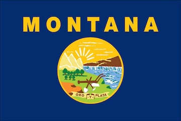

About Me
My name is Jackson. I was born in Montana. I am currently mowing lawns for work. I enjoy geocaching and tying things out of paracord.
Montana, United States of America

Official flag of Montana
Montana is the fourth largest state in the United States. On the flip side, it is among the least populated states with around 1.1 million people. Montana shares borders with Idaho, Wyoming, North Dakota, South Dakota, and Canada. The Rocky Mountain Range runs through the western side of Montana, which makes it a popular tourist attraction for hikers and skiers.